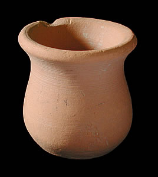
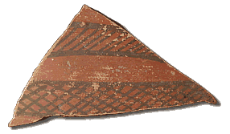

Type B
This type of pot is commonly found at Indus Valley sites. Pots like this with an open rim and wide body may have been used in everyday life. However, this pot is so small (only 3.5 cm high), it is unclear what it may have been used for. It is made of fine clay and was probably made on a wheel, indicating that it would date from a period after that technology was in common use. This pot is a slightly unusual shape as it has no real base. However, many pots like this have been found at Indus Valley sites. It is not completely clear why some pots have bases and some do not. It could be related to how the pot was used or it could be a method of decoration. Although this pot is undecorated, pots of this type which were decorated have been found. Some archaeologists believe that the decorated pots were used on special occasions or were used in burials. 
This is a sherd painted with a typical Indus Valley design. |